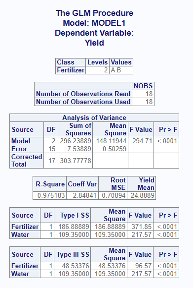
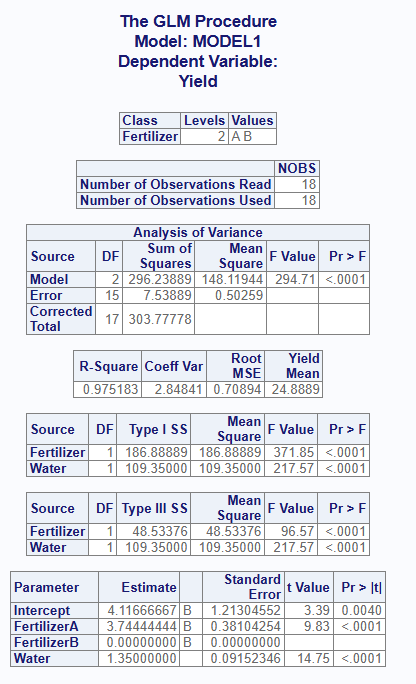
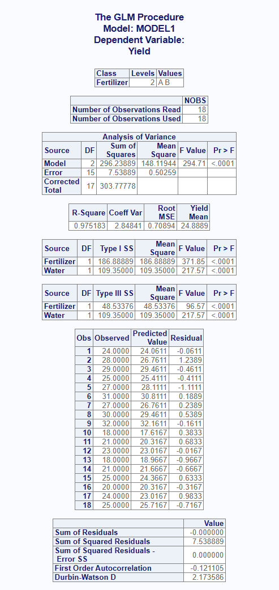
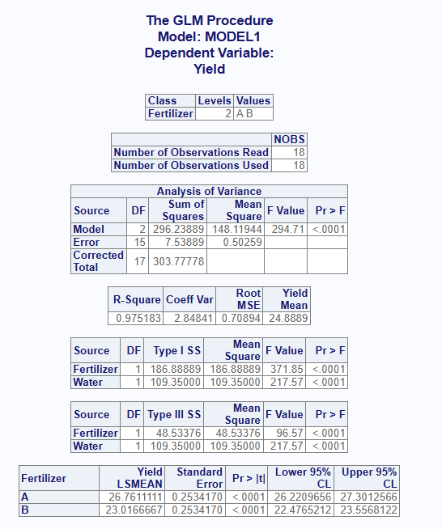

The proc_glm() function replicates a SAS® PROC GLM
procedure. It is used to perform a general linear model analysis. Unlike
proc_reg(), the proc_glm() function accepts
categorical predictors through the class parameter, and
produces Type I, Type II, and Type III sums of squares. The function is
both interactive and returns datasets.
Below is some sample data. This sample data shows the Fertilizer, Water, Yield, and Field for a group of plants. In this example, we’ll examine the relationship between Yield and Fertilizer type, adjusting for the amount of Water each plot received:
# Create sample data
plants <- read.table(header = TRUE, text = '
Plot Fertilizer Water Yield Field
1 A 12 24 North
2 A 14 28 North
3 A 16 29 North
4 A 13 25 North
5 A 15 27 South
6 A 17 31 South
7 A 14 27 South
8 A 16 30 South
9 A 18 32 South
10 B 10 18 North
11 B 12 21 North
12 B 14 23 North
13 B 11 18 North
14 B 13 21 South
15 B 15 25 South
16 B 12 20 South
17 B 14 24 South
18 B 16 25 South')If no options are specified, the proc_glm() function
will produce an interactive report in the RStudio viewer. The report
contains the following tables:
class parameter.Note that categorical variables must be identified with the
class parameter. The variable name may be quoted, or passed
unquoted using the v() function.
# Turn off printing for CRAN checks
options("procs.print" = FALSE)
# Basic operation
proc_glm(plants, Yield ~ Fertilizer + Water, class = Fertilizer)
The proc_glm() function has two ways to pass optional
statistics: stats and options.
The stats parameter contains options that are normally
passed on the “model” statement in SAS® PROC GLM. Here is a table of the
available stats keywords:
| Keyword | Description |
|---|---|
| ss1 | Adds the Type I (sequential) sums of squares to the output. |
| ss2 | Adds the Type II (partial) sums of squares to the output. |
| ss3 | Adds the Type III (partial) sums of squares to the output. |
| solution | Requests a parameter estimates table be added to the interactive report. The keyword “est” is an accepted alias. |
| clparm | Requests confidence limits be added to the parameter estimates table. The keyword “clb” is an accepted alias. |
| p | Computes predicted and residual values and sends them to separate tables on the interactive report. |
Here is a table of the options keywords:
| Keyword | Description |
|---|---|
| alpha | The “alpha =” option will set the alpha value for confidence limit statistics. |
| noprint | Turns off the interactive report that is sent to the viewer. |
| outstat | Requests the sums of squares be sent to the output dataset. This is the default output dataset, so the option does not normally need to be passed. |
In addition to the interactive report shown above, the
proc_glm() function produces output datasets. You can save
these datasets in a variable and use it for additional analysis or
reporting. Here is how to save the default output dataset:
# Output dataset
res1 <- proc_glm(plants, Yield ~ Fertilizer + Water, class = Fertilizer)
# View results
res1
# MODEL DEPVAR SOURCE TYPE DF SS MEANSQ FVAL PROBF
# 1 MODEL1 Yield Fertilizer SS1 1 186.88889 186.88889 371.8497 5.349832e-12
# 2 MODEL1 Yield Water SS1 1 109.35000 109.35000 217.5718 2.459793e-10
# 3 MODEL1 Yield Fertilizer SS3 1 48.53376 48.53376 96.5668 6.284856e-08
# 4 MODEL1 Yield Water SS3 1 109.35000 109.35000 217.5718 2.459793e-10The default output dataset contains the Type I and Type III sums of squares for each term in the model. Notice how the Type I and Type III sums of squares for Fertilizer differ, because the Fertilizer plots also received different amounts of Water.
If you want only one type of sums of squares, request it with the
stats parameter. For example, the “ss3” keyword returns
only the Type III values:
# Output dataset using "ss3" keyword
res2 <- proc_glm(plants, Yield ~ Fertilizer + Water, class = Fertilizer,
stats = ss3)
# View results
res2
# MODEL DEPVAR SOURCE TYPE DF SS MEANSQ FVAL PROBF
# 1 MODEL1 Yield Fertilizer SS3 1 48.53376 48.53376 96.5668 6.284856e-08
# 2 MODEL1 Yield Water SS3 1 109.35000 109.35000 217.5718 2.459793e-10If you want to return the statistics from the interactive report as
data, you can do that using output = "report":
# Output using "report" output
res3 <- proc_glm(plants, Yield ~ Fertilizer + Water, class = Fertilizer,
output = "report")
# View results
res3
# $ClassLevels
# CLASS LEVELS VALUES
# 1 Fertilizer 2 A B
#
# $NObs
# LABEL NOBS
# 1 Number of Observations Read 18
# 2 Number of Observations Used 18
#
# $ANOVA
# SOURCE DF SUMSQ MEANSQ FVAL PROBF
# 1 Model 2 296.238889 148.1194444 294.7108 9.132695e-13
# 2 Error 15 7.538889 0.5025926 NA NA
# 3 Corrected Total 17 303.777778 NA NA NA
#
# $FitStatistics
# RSQ COEFVAR RMSE DEPMEAN
# 1 0.9751829 2.84841 0.7089377 24.88889
#
# $TypeI
# SOURCE DF SUMSQ MEANSQ FVAL PROBF
# 1 Fertilizer 1 186.8889 186.8889 371.8497 5.349832e-12
# 2 Water 1 109.3500 109.3500 217.5718 2.459793e-10
#
# $TypeIII
# SOURCE DF SUMSQ MEANSQ FVAL PROBF
# 1 Fertilizer 1 48.53376 48.53376 96.5668 6.284856e-08
# 2 Water 1 109.35000 109.35000 217.5718 2.459793e-10This list of data frames may in turn be passed into
proc_print() to write the report to a file.
Some of the keyword options affect the interactive report. Let’s look at a few.
The “solution” keyword on the stats parameter adds a
parameter estimates table to the report. These values can be used to
construct the model. Because the class variable is coded
against a reference level, the last level (here Fertilizer B) is zeroed
and flagged with a “B”. Adding the “clparm” keyword appends confidence
limits to this same table:
# View report using "solution" keyword
proc_glm(plants, Yield ~ Fertilizer + Water, class = Fertilizer,
stats = solution)
The “p” keyword will add two more tables to the interactive report. The first is a table of predicted and residual values for each observation. The second is a summary table for the residuals:
# View report using "p" keyword
proc_glm(plants, Yield ~ Fertilizer + Water, class = Fertilizer,
stats = p)
The lsmeans parameter adds a least-squares means table
for a class effect. The least-squares means are the group
means adjusted for the other terms in the model. The
contrast and estimate parameters may likewise
be used to test and estimate specific comparisons between the
class levels:
# View report using "lsmeans" parameter
proc_glm(plants, Yield ~ Fertilizer + Water, class = Fertilizer,
lsmeans = Fertilizer)
If you want to separate your analysis into by groups, use the
by parameter. For the interactive report, the function will
create a separate set of tables for each value of the by group. For the
output dataset, the by value will be shown in a column called “BY”. Here
is an example:
# By grouping
res5 <- proc_glm(plants, Yield ~ Fertilizer + Water, class = Fertilizer,
by = Field)
# View results
res5
# BY MODEL DEPVAR SOURCE TYPE DF SS MEANSQ FVAL PROBF
# 1 North MODEL1 Yield Fertilizer SS1 1 84.50000 84.50000 122.71784 1.044349e-04
# 2 North MODEL1 Yield Water SS1 1 31.55714 31.55714 45.82988 1.068828e-03
# 3 North MODEL1 Yield Fertilizer SS3 1 19.96891 19.96891 29.00049 2.977727e-03
# 4 North MODEL1 Yield Water SS3 1 31.55714 31.55714 45.82988 1.068828e-03
# 5 South MODEL1 Yield Fertilizer SS1 1 102.40000 102.40000 179.20000 3.042972e-06
# 6 South MODEL1 Yield Water SS1 1 39.20000 39.20000 68.60000 7.298423e-05
# 7 South MODEL1 Yield Fertilizer SS3 1 21.60000 21.60000 37.80000 4.683778e-04
# 8 South MODEL1 Yield Water SS3 1 39.20000 39.20000 68.60000 7.298423e-05For multiple by groups, pass the variable names as a quoted vector
using the c() function, or as an unquoted vector using the
v() function.
An important feature of the proc_glm() function is the
ability to specify multiple model statements. This feature gives you the
capability to easily run and compare different models for the best fit.
To pass multiple models, combine the models into a list().
For the interactive report, multiple models will produce a separate set
of report tables for each model. For the output dataset, the models will
be distinguished by the model name on the “MODEL” column.
# Multiple Models
res6 <- proc_glm(plants, list(Yield ~ Fertilizer,
Yield ~ Fertilizer + Water),
class = Fertilizer, stats = ss3)
# View results
res6
# MODEL DEPVAR SOURCE TYPE DF SS MEANSQ FVAL PROBF
# 1 MODEL1 Yield Fertilizer SS3 1 186.88889 186.88889 25.58175 1.164801e-04
# 2 MODEL2 Yield Fertilizer SS3 1 48.53376 48.53376 96.56680 6.284856e-08
# 3 MODEL2 Yield Water SS3 1 109.35000 109.35000 217.57185 2.459793e-10Adding the Water covariate in the second model reduces the Fertilizer sum of squares from 186.9 to 48.5, which shows how much of the apparent Fertilizer effect was really due to differences in Water.
The proc_glm() function also offers options for data
shaping. The shaping options can reduce the number of transformations
needed for follow-on analysis.
There are three shaping options: “wide”, “long”, and “stacked”. The “wide” option is the default, and places the statistics in columns and sources in rows. The “long” option places statistics in rows and sources in columns. The “stacked” option puts both statistics and sources in rows.
The following example illustrates the differences between these data shaping options:
# Shape wide
res7 <- proc_glm(plants, Yield ~ Fertilizer + Water, class = Fertilizer,
stats = ss3, output = wide)
# Wide results
res7
# MODEL DEPVAR SOURCE TYPE DF SS MEANSQ FVAL PROBF
# 1 MODEL1 Yield Fertilizer SS3 1 48.53376 48.53376 96.5668 6.284856e-08
# 2 MODEL1 Yield Water SS3 1 109.35000 109.35000 217.5718 2.459793e-10
# Shape long
res8 <- proc_glm(plants, Yield ~ Fertilizer + Water, class = Fertilizer,
stats = ss3, output = long)
# Long results
res8
# MODEL DEPVAR SOURCE TYPE STAT COL1
# 1 MODEL1 Yield Fertilizer SS3 DF 1.000000e+00
# 2 MODEL1 Yield Fertilizer SS3 SS 4.853376e+01
# 3 MODEL1 Yield Fertilizer SS3 MEANSQ 4.853376e+01
# 4 MODEL1 Yield Fertilizer SS3 FVAL 9.656680e+01
# 5 MODEL1 Yield Fertilizer SS3 PROBF 6.284856e-08
# 6 MODEL1 Yield Water SS3 DF 1.000000e+00
# 7 MODEL1 Yield Water SS3 SS 1.093500e+02
# 8 MODEL1 Yield Water SS3 MEANSQ 1.093500e+02
# 9 MODEL1 Yield Water SS3 FVAL 2.175718e+02
# 10 MODEL1 Yield Water SS3 PROBF 2.459793e-10
# Shape stacked
res9 <- proc_glm(plants, Yield ~ Fertilizer + Water, class = Fertilizer,
stats = ss3, output = stacked)
# Stacked results
res9
# MODEL DEPVAR SOURCE TYPE STAT VALUES
# 1 MODEL1 Yield Fertilizer SS3 DF 1.000000e+00
# 2 MODEL1 Yield Fertilizer SS3 SS 4.853376e+01
# 3 MODEL1 Yield Fertilizer SS3 MEANSQ 4.853376e+01
# 4 MODEL1 Yield Fertilizer SS3 FVAL 9.656680e+01
# 5 MODEL1 Yield Fertilizer SS3 PROBF 6.284856e-08
# 6 MODEL1 Yield Water SS3 DF 1.000000e+00
# 7 MODEL1 Yield Water SS3 SS 1.093500e+02
# 8 MODEL1 Yield Water SS3 MEANSQ 1.093500e+02
# 9 MODEL1 Yield Water SS3 FVAL 2.175718e+02
# 10 MODEL1 Yield Water SS3 PROBF 2.459793e-10Next: Data Manipulation